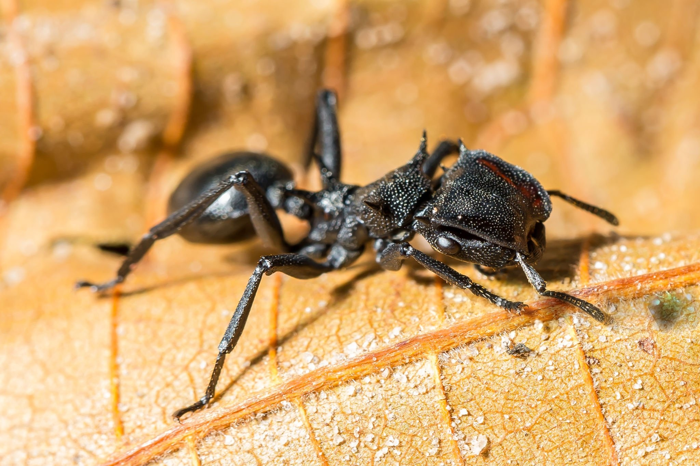
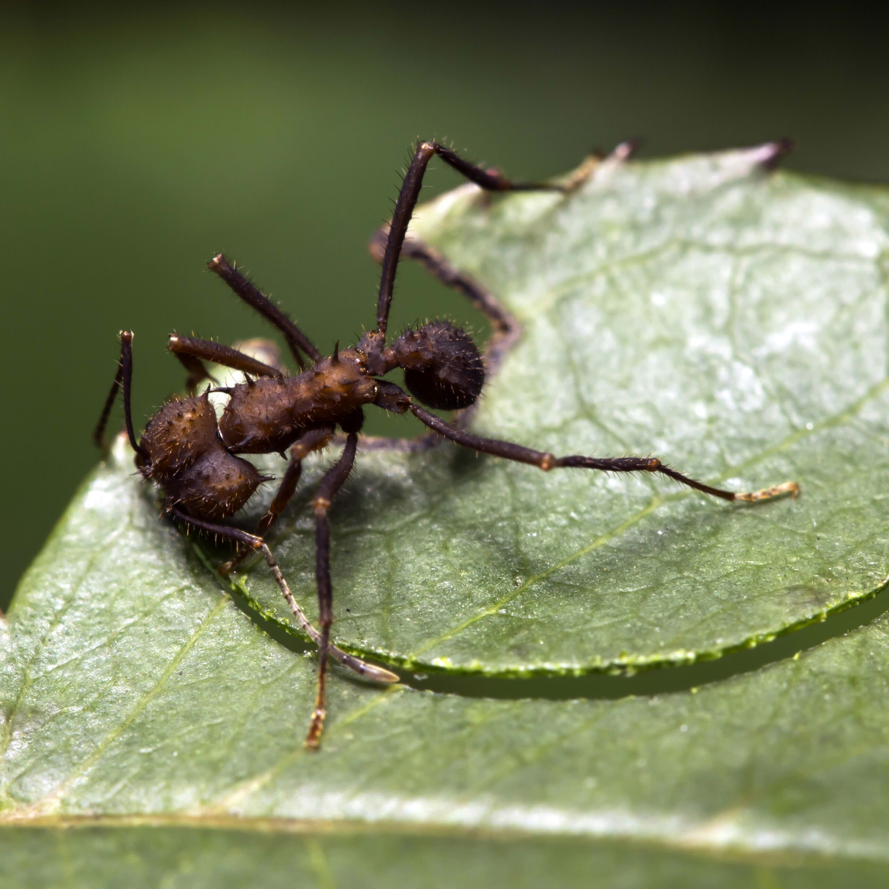

Spécimens Notables

⚠ TOXIN DETECTED


Comprenez la classification scientifique des fourmis et maîtrisez les nomenclatures pour identifier les espèces.
La taxonomie est la science qui classe les organismes vivants. Elle permet de les identifier,
les nommer et les organiser selon leurs liens évolutifs en « clades ».
En myrmécologie, c'est la première étape indispensable avant toute observation comportementale.
Survolez pour voir les critères d'identification.
Ex: Lasius (Dendrolasius) fuliginosus